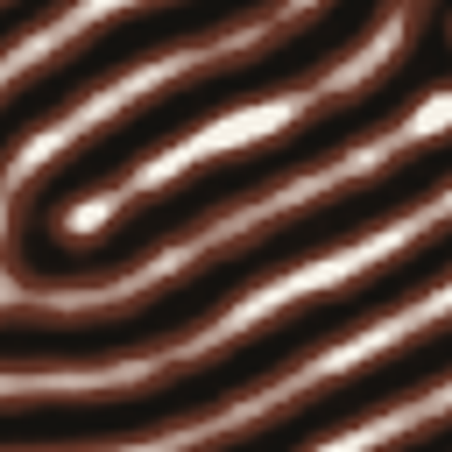

MODEL LIFE · 04 / 04
LENGYEL–EPSTEIN
38.7/100
Lengyel–Epstein 条纹
CIMA 同族的 Lengyel–Epstein 模型，用固定噪声种子长条纹。

12000 步 · fixed:le-noise
读法 目标与复现的密度、各向异性、相关长度、斑块数与边界密度逐项对齐；分数来自这五项的距离。
D_v80
a8
b6
σ0.6
dt0.001
steps12000
行为指纹 · 条纹密度 红 / 各向异性 绿
稳定步数12000
活跃度0.0038
翻转率0.0058
增长 / 1000 步-0.03
复现 服务端按模型卡固定参数与种子重跑 12000 步；行为指纹取自 12 个采样点。
结构签名 · 目标 / 复现
密度 ρ
38.8% / 48.2%
各向异性 A
0.70 / 0.31
相关长度 L_c
18 / 22
斑块数 N
7 / 7
边界密度 P
0.22 / 0.13
✓ 模式 stripes✓ 密度 48.2%✓ 各向异性下限 30.5%✓ 稳定步数 12000✓ 分数 38.7
来源 Kazarnikov et al. 2025, arXiv:2504.02530, Fig. 6 [I] · CC BY 4.0
许可 CC BY 4.0 · 目标图像
不变量 constant-field-laplacian=0 · pure-diffusion-conservation · deterministic-noise-seed
许可 CC BY 4.0 · 目标图像
不变量 constant-field-laplacian=0 · pure-diffusion-conservation · deterministic-noise-seed
curl -sS -X POST https://37jalf2ykndtrfn6iou.traesite.cn/api/research/replicate -H 'content-type: application/json' -d '{"modelId":"model-le-stripes"}'